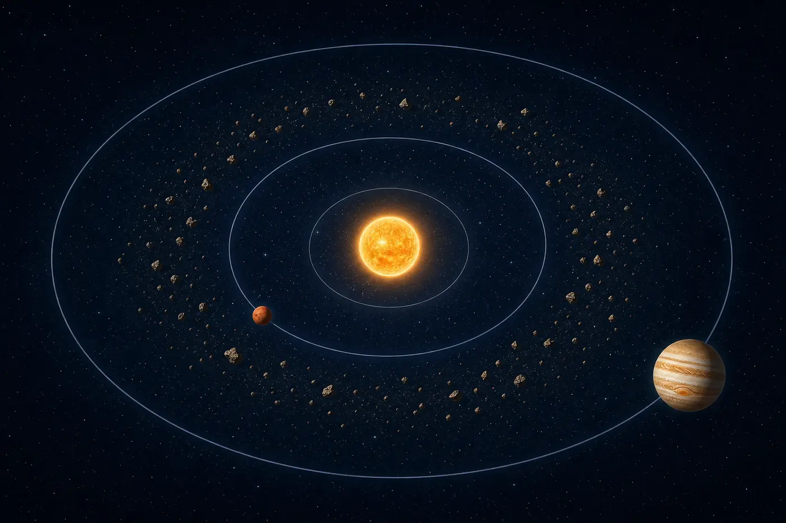

What Is the Asteroid Belt?
The asteroid belt is a region of millions of rocky and metallic bodies orbiting the Sun between Mars and Jupiter. Most are small, irregular fragments, but a few are large enough to be worlds in their own right.
The belt is not the remains of an exploded planet. It is mostly material that never successfully became a planet because Jupiter's gravity stirred up the region, making collisions too fast and disruptive for easy growth.
2.1-3.3 AU
A useful classroom range for the main belt; its boundaries are not sharp.
Ceres
The largest object in the belt and classified as a dwarf planet.
Mostly Empty
Spacecraft cross the belt safely because objects are widely separated.
Old Material
Asteroids preserve clues from about 4.6 billion years of Solar System history.

Movie myth: pilots do not weave through a wall of rocks. The belt is so spread out that spacecraft can cross it without dodging asteroid after asteroid. The dots in the model are enlarged enormously so you can see them.